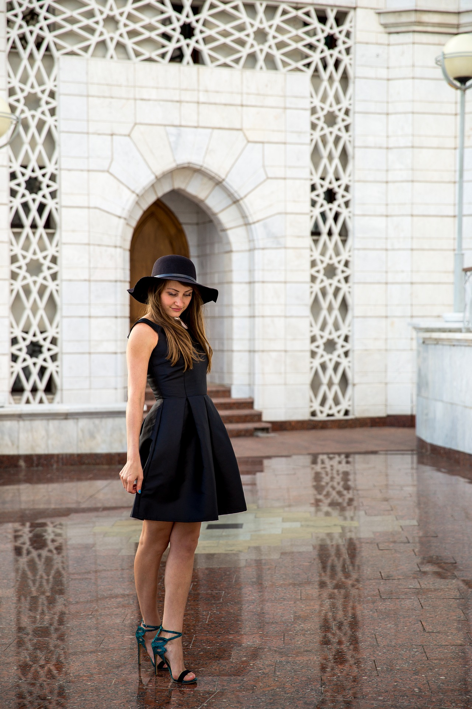
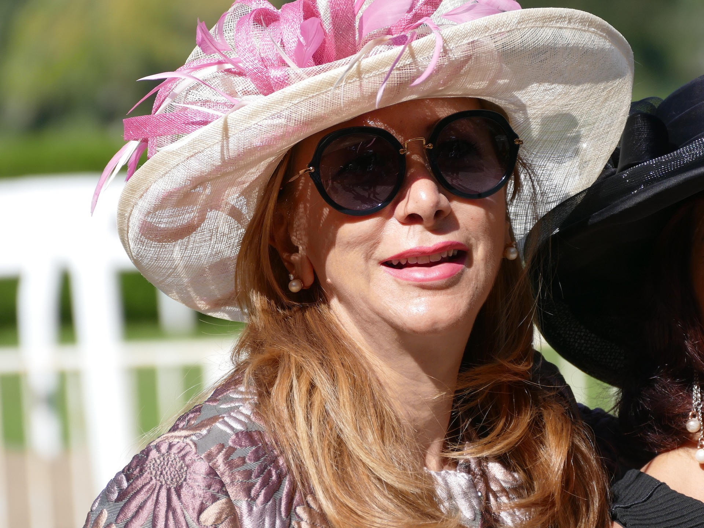

Race Day is a chance for students to dress up in they're favourite dress, suit or two-piece. The students wear a variety of styles of dresses, between colour and shape.


Overall
The dresses usually are bright bold colours as seen in the first image. Students usually accompany the dress with accessories such as big hats and head pieces(image 1+2).The style most often worn at the races can be seen in image 3. The outfits at the races are always over the top flashy and stunning. Race Day is where most of the fashion of the year can be seen especially the spring collection.